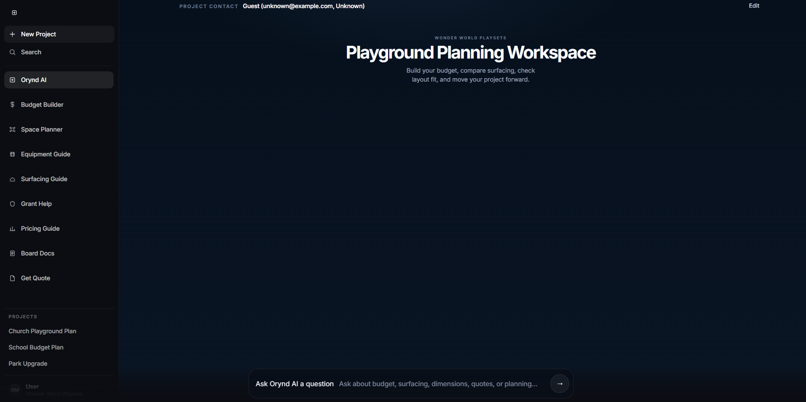
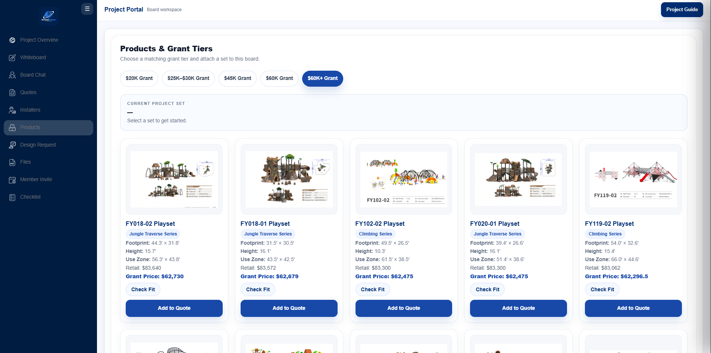
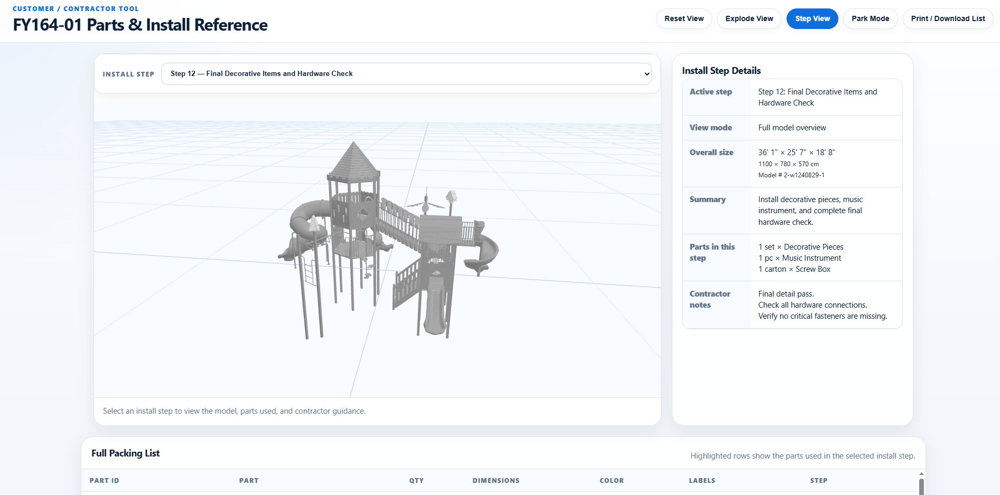
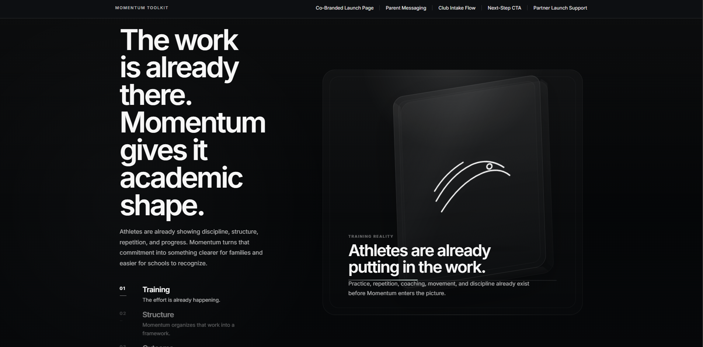

Premium Websites
High-end front-end experiences that make the brand feel credible, modern, and ready to sell.
Premium websites · portals · automation
BIM Labs Studio designs high-end websites, client portals, workflow tools, and automation systems for businesses that need more than a pretty page.
Operations System
Lead captured
Quote generated
Client portal created
Proof of Execution
From AI planning flows to client portals, 3D tools, and launch pages, each build turns scattered operations into a clean digital experience.




“Everything finally felt connected.”
What We Build
Every build is shaped around the same goal: make the business look sharper, move faster, and feel easier to operate.
High-end front-end experiences that make the brand feel credible, modern, and ready to sell.
Project hubs that organize quotes, files, approvals, visuals, updates, and next steps.
Lead capture, follow-up, intake, quoting, onboarding, and internal workflow systems.
Internal dashboards, AI flows, 3D previews, calculators, generators, and business-specific systems.
Process
Every section, page, form, and automation should have a job. Pretty is not enough. It has to move the business forward.
We identify where leads, clients, tasks, and operations are slowing down.
We turn messy workflows into a clear user experience and business flow.
We create the website, portal, dashboard, or automation tool with clean execution.
We polish the details so the final product feels premium, clear, and credible.
Start Here
Tell us what you are trying to build. We will help shape it into a clear, premium digital system.